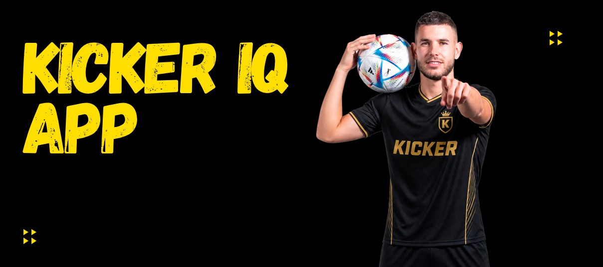

Kicker IQ
5DSM — 1º Sem. 2026Sistema inteligente para monitoramento e análise do desempenho físico de atletas de futebol, transformando dados históricos em informações para apoiar decisões técnicas e táticas.
Minha contribuição: atuei como desenvolvedor front-end, implementando interfaces responsivas e dashboards para visualização e comparação dos indicadores dos atletas.
Repositório